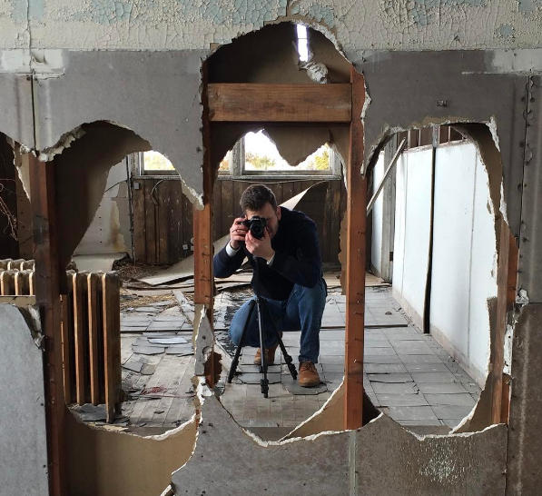

My passion for media began at an early age. My father would sit me down to watch classic films with him, and throughout the film he would point out small things that made the film great, as well as things that made the film suffer. As I got older, this scrutiny would manifest into deep appreciation of film as a medium. I soon found myself not only analyzing the story that was being told, but how it was being told. How was it made? How did they shoot that? What cameras were used?
Fast forward to my life as a college student. I was studying advertising and public relations. My field of study was...interesting. But there was too much theory and virtually no application. It wasn't enough to study different media.
I wanted to create it.
When I studied abroad in England, I began to explore video production and post-production. Soon I became fascinated with the software I was using, and the machines that I worked on. I started to become interested in understanding the differences between Mac OS and Windows. When I came back to The States I decided to declare myself a New Communication Media major and picked up a minor in Computer Applications. The marriage of both fields was perfectly suited to my interests.
By my graduation, I had already developed websites and became proficient in computer networks. I had produced video content as a member of 20 CSTV where I worked in a professional television studio, and as an intern for the SUNY Cortland Communications department.
So what is Matthew Croak Media? It is as much a brand as it is an exposition. I would like to present myself as a multi-media consultant and developer. This site, provides as my online portfolio as well as my base of operations.
So please, explore my site. Scrutinize my work. And be inspired.
☞ For any media inqueries or bookings, please leave a message on the
Contact page!
For a more comprehensive professional profile, please click the icon below to check out my LinkedIn page!